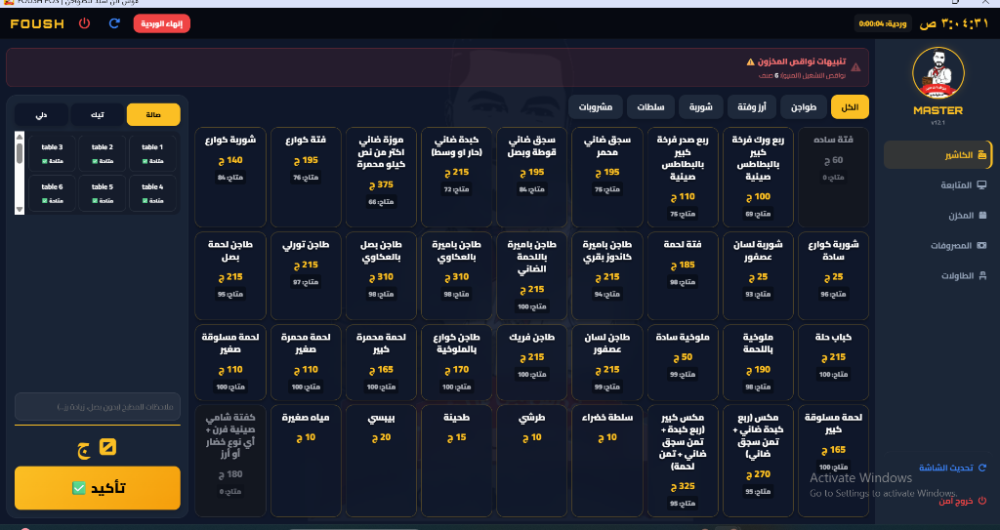
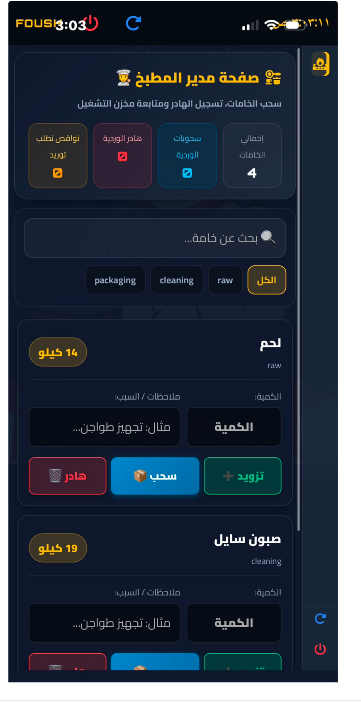
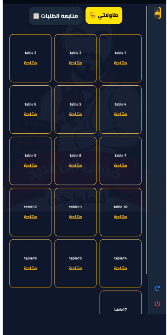
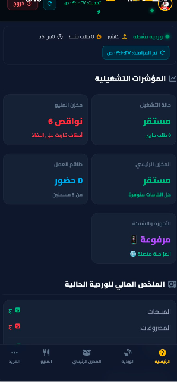

FOUSH Restaurant POS
A robust, hybrid, offline-first restaurant management & Point of Sale ecosystem.
Most restaurant software fails the moment the internet drops. To solve this critical operational risk, I engineered FOUSH—a bespoke, highly resilient POS system running on a Dual-Engine Architecture. It combines a local Node.js LAN server for uninterrupted on-premises operations (orders, kitchen routing, raw thermal printing) with Firebase Cloud synchronization for remote owner visibility. The result is a system that never stops working, ensuring zero downtime during peak hours.

The Fragility of Cloud-Only POS Systems
Internet Dependency
Traditional cloud POS systems freeze completely during internet outages. In a high-volume restaurant, a 10-minute outage means lost orders, angry customers, and chaotic kitchen routing.
Clunky Browser Printing
Web-based POS systems typically rely on standard browser print dialogs, which are incredibly slow, require manual confirmation, and interrupt the cashier's workflow.
Cluttered Interfaces
Off-the-shelf software often jams cashier, waiter, and manager functions into one screen, leading to complex access permissions and slowed down staff onboarding.
Dual-Engine Hybrid Architecture
A localized network ensuring absolute stability, backed by cloud synchronization for off-site management.
Local Node.js LAN Server
Runs locally inside the venue over Wi-Fi. It handles real-time kitchen routing, table orders, and receipt printing with zero dependencies on external internet connections.
Firebase Cloud Sync
Syncs transaction logs, sales trends, and stock levels in real time to the cloud the moment internet is restored or available, preventing any data loss.
Raw ESC/POS Printing
Dispatches raw printing commands directly to local thermal printers over TCP sockets. Bypasses the slow browser print dialog for instant ticket generation.
5 Role-Isolated PWAs
Instead of one crowded app, the system deploys 5 separate Progressive Web Apps tailored for each specific job.
Floor Waiter Portal
A tablet/mobile optimized interface for waiters to take orders directly at the table, sending items instantly to the kitchen and updating the cashier's tab.
Kitchen Display System (KDS)
A real-time screen inside the kitchen receiving orders instantly. Features audio alerts and allows chefs to mark items as prepared, signaling the waiters.
Cashier POS Terminal
The central billing interface. Manages table settlements, takeaway orders, raw printing triggers, and end-of-shift drawer closures.
Order Status Monitor
An external TV display for customers showing the status of takeaway orders (Preparing vs. Ready), integrated with an automated audio calling system.
Remote Owner Dashboard
A secure cloud portal for ownership to track live sales, calculate food costs, manage employee payroll, and monitor net profits from anywhere in the world.
1-Click DevOps Automation
Wrote custom Windows Batch scripts so non-technical restaurant staff can launch the entire ecosystem, clear cache, and resolve local IP conflicts with a single click.
System Interfaces
Actual production screenshots demonstrating the tailored UI/UX for different restaurant roles.

Cashier POS Terminal
Fast, touch-optimized billing interface for immediate transaction processing and table management.

Kitchen Display System (KDS)
High-contrast, distraction-free view for chefs to track incoming tickets and preparation timers.

Floor Waiter Tablet PWA
Mobile-first Progressive Web App allowing floor staff to submit orders directly to the kitchen from the table.

Remote Owner Dashboard
Cloud-synced analytics portal for ownership to review sales metrics, inventory, and shift closures remotely.
Bulletproof Systems for High-Pressure Environments
The FOUSH project is a deep dive into local networking, WebSocket synchronization, cloud database design, and hardware integration. It highlights a critical BIS (Business Information Systems) philosophy: Technology must adapt to the physical reality of the business, not the other way around. By engineering an Offline-First architecture and bypassing standard browser limitations for raw ESC/POS printing, the system ensures the restaurant never skips a beat—even when the internet does.